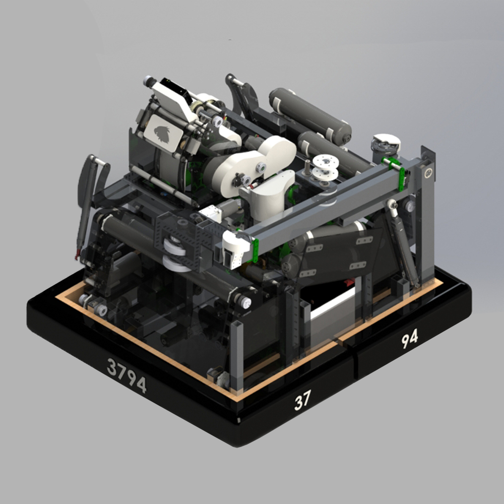

¿De que trata?

Debido a la pandemia era sabido que para la competencia de robótica FRC 2021 se repitiría el reto del año pasado ya que la mayoría de equipos ni siquiera tuvo la oportunidad de competir, con esto en mente y esperando que la pandemia terminara diseñé un robot con mucha más producción que en años anteriores y tomé inspiración de equipos que logré ver competir antes de que se cancelaran los eventos del 2020.
Si bien este robot nunca llegó a ser construido porque como ya se sabe la pandemia no terminó para esa fecha, este robot hubiera contado con las siguientes características:
- Chasis diferencial de 6 llantas de tracción.
- Doble intake para recoger pelotas de dos lados.
- Indexador por gravedad y rodillos en el suelo.
- Pre-disparador para acelerar las pelotas antes de llegar al disparador.
- Disparador con dos motores Falcon y llantas tanto arriba como abajo con la misma velocidad tangencial.
- Ángulo ajustable por dos servomotores.
- Cámara "limelight" para el ajuste automático del disparo.
- Torreta unida al disparador para ajustar el disparo a cualquier ángulo.
- Elevador retraible para mantener el robot pequeño.
- Deslizador en la parte superior del elevador para balancearlo en la plataforma de la colgada.
- Llantas con sensor de color retraibles para obtener más puntos al girar un disco de colores a una posición específica.
Para este robot realicé un folleto técnico que describe de mejor manera y visualmente cada parte del robot.